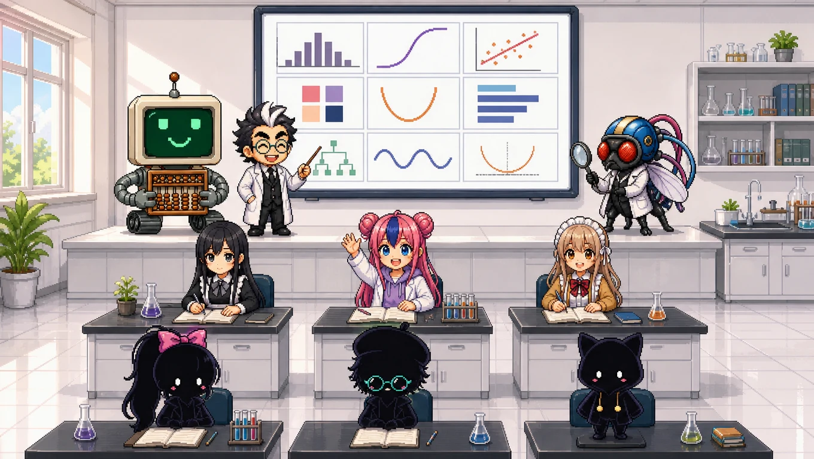
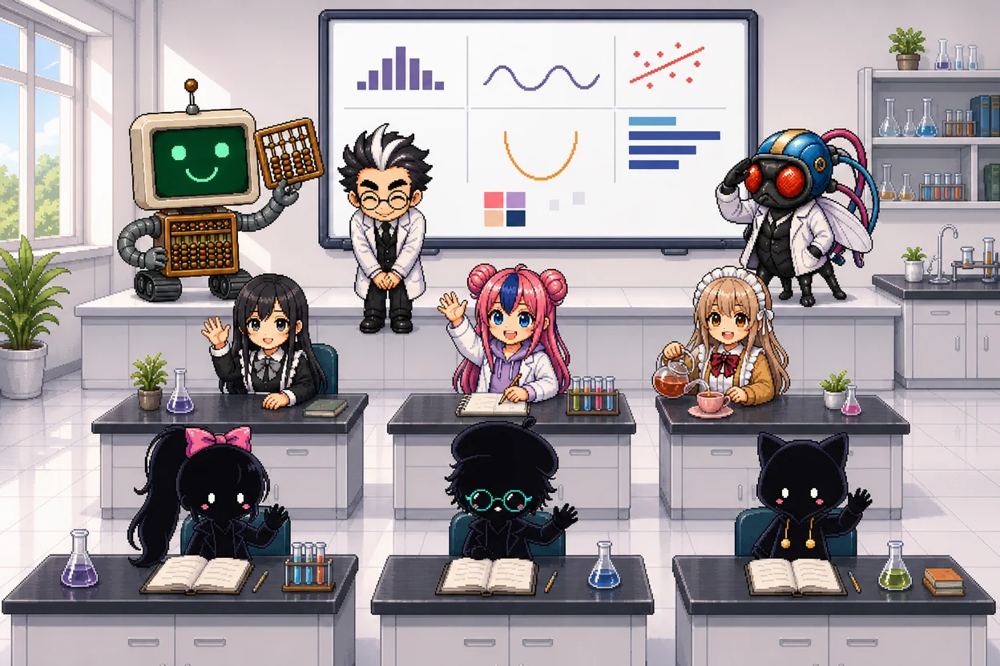
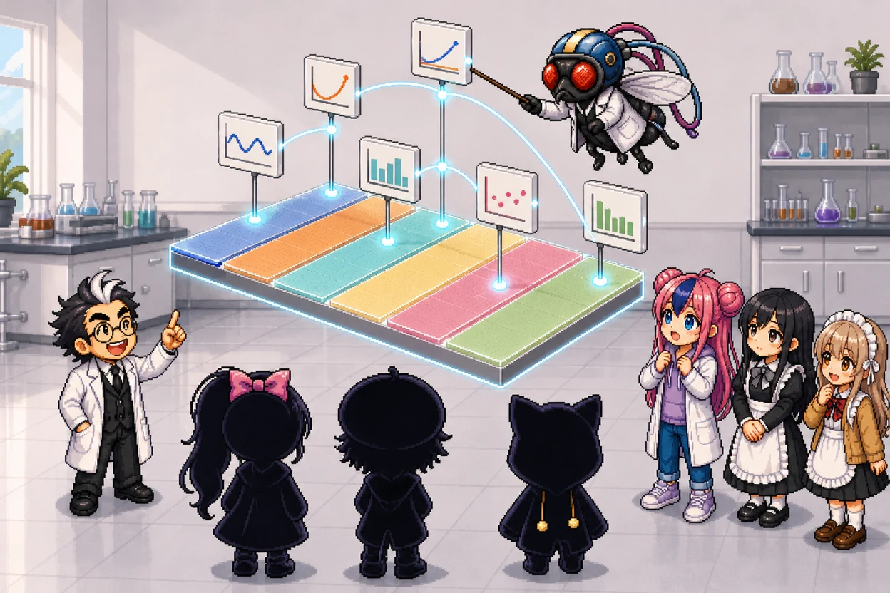
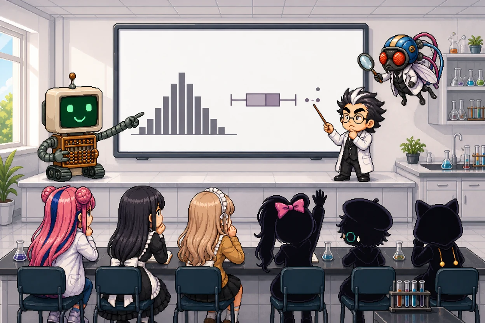
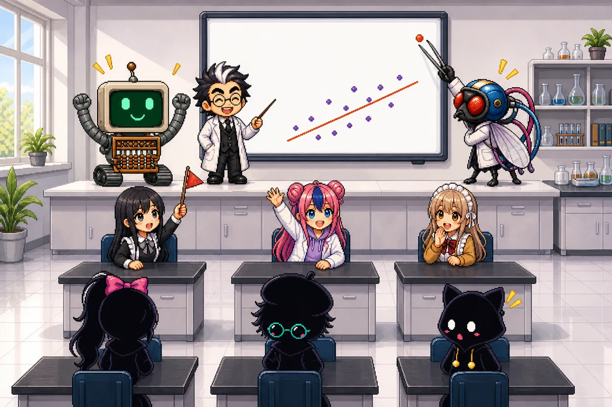
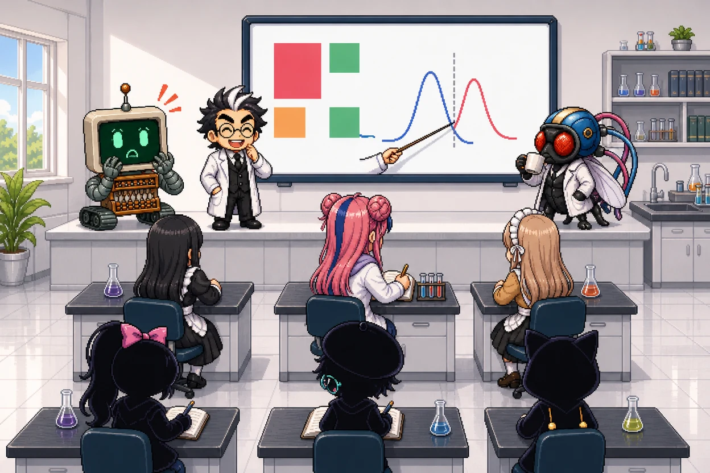
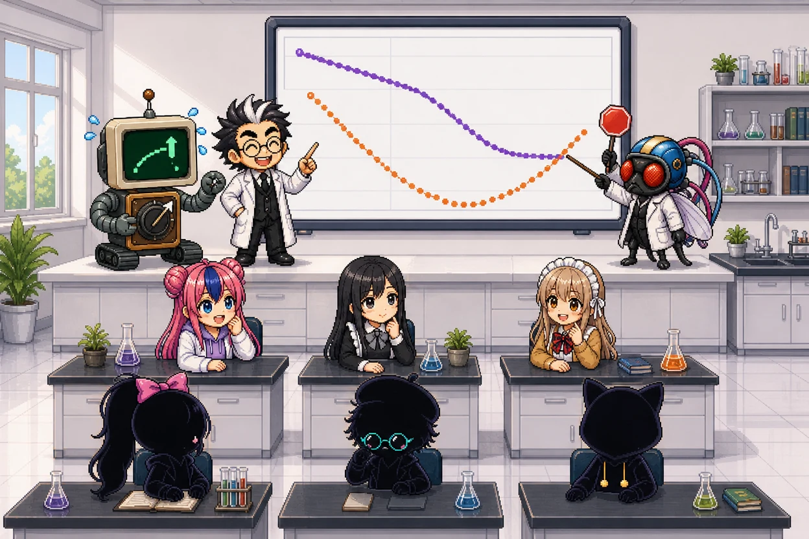
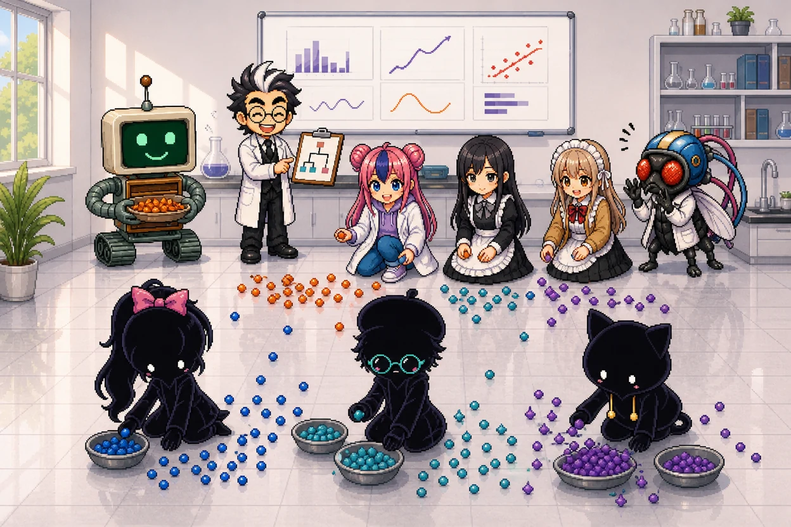
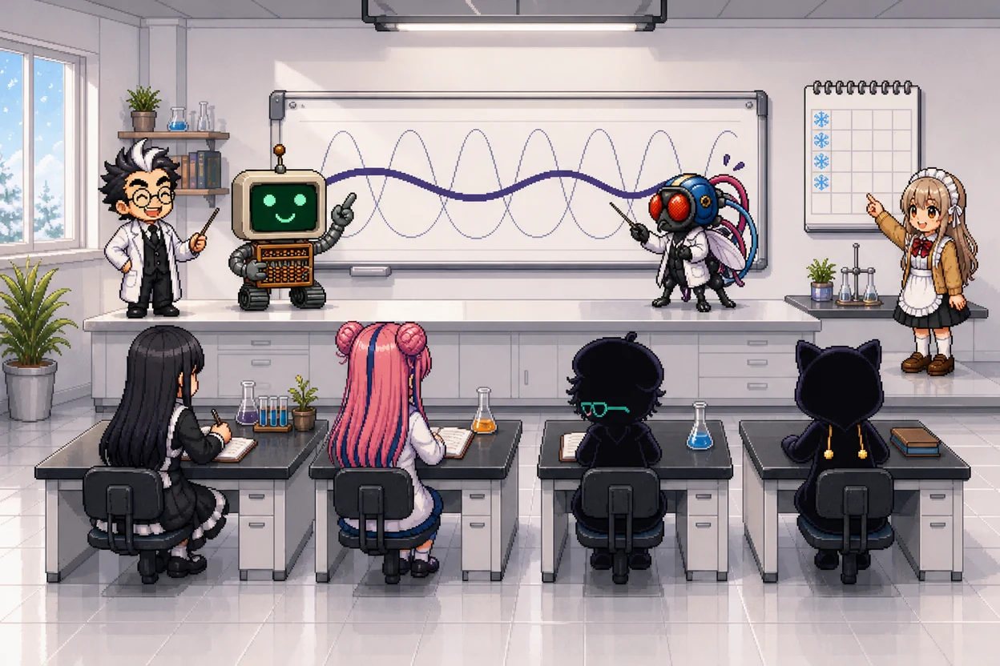
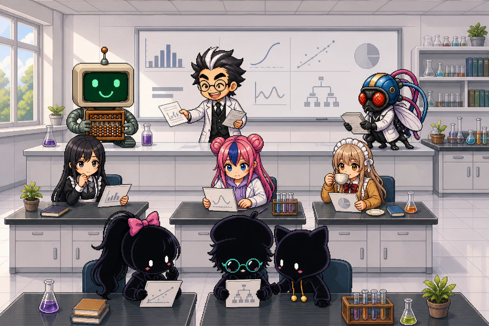

히스토그램·밀도곡선Histogram & KDE
값이 어디에 몰려 있고, 봉우리는 몇 개인가?
읽는 법막대 높이는 그 구간에 든 개수입니다.
흔한 오독“구간 수를 바꿔도 모양은 똑같잖아요.” → 구간을 5개로 하면 봉우리 둘이 하나로 뭉개지기도 해.
회사에서배송 소요일, 주문 금액, 체류 시간의 퍼짐 확인
히스토그램부터 SHAP, 실루엣, 자기상관까지 데이터 분석에서 자주 만나는 차트 32장을 먼저 한 장씩 그려 보여 드립니다. 그림마다 어떤 질문에 답하는지, 어떻게 잘못 읽기 쉬운지를 한 줄로 붙였습니다. 자세한 설명과 실험은 아래 연구실 수업(6교시)에서 이어집니다.
값이 어디에 몰려 있고, 봉우리는 몇 개인가?
읽는 법막대 높이는 그 구간에 든 개수입니다.
흔한 오독“구간 수를 바꿔도 모양은 똑같잖아요.” → 구간을 5개로 하면 봉우리 둘이 하나로 뭉개지기도 해.
회사에서배송 소요일, 주문 금액, 체류 시간의 퍼짐 확인
여러 집단의 가운데·퍼짐·이상치를 한 번에 비교하면?
읽는 법상자 가운데 선은 중앙값, 상자는 가운데 50%(사분위 범위), 수염 밖 점은 이상치 후보입니다.
흔한 오독“두 상자가 겹치니까 두 지점은 차이가 없네요.” → 겹쳐도 차이가 있을 수 있어! …라고 박사님이 그러셨어.
회사에서지점별 대기 시간, 라인별 불량 치수 비교
이 값 이하가 전체의 몇 %인가?
읽는 법왼쪽부터 쌓아 올린 계단입니다.
흔한 오독“계단이 가파른 곳은 값이 큰 곳이죠?” → 가파른 곳은 값이 ‘많이 몰린’ 곳이야.
회사에서‘요청의 95%가 몇 초 안에 끝나나’ 같은 서비스 수준 확인
내 데이터가 정규분포(또는 기준 분포)를 따르나?
읽는 법점이 대각선 위에 있으면 기준 분포와 닮았습니다.
흔한 오독“가운데 점들이 선 위에 있으니 정규분포 맞아요.” → 문제는 늘 끝이야.
회사에서수익률 꼬리 위험 점검, 회귀 잔차의 정규성 확인
두 집단(또는 데이터와 기준 분포)의 분포가 얼마나 다른가?
읽는 법두 누적분포 계단 사이의 가장 큰 세로 차이가 KS 통계량 D입니다.
흔한 오독“D는 클수록 무조건 좋은 거죠?” → 모델 변별력이면 클수록 좋아.
회사에서신용점수 모델 변별력, 운영 데이터 변화(드리프트) 감시
한 변수가 커질 때 다른 변수는 어떻게 되나?
읽는 법점 구름이 오른쪽 위로 기울면 함께 증가, 오른쪽 아래면 반대로 움직입니다.
흔한 오독“점이 오른쪽 위로 가니까 광고비가 매출을 올린 거예요.” → 함께 움직인다(상관)와 일으킨다(인과)는 달라.
회사에서광고비와 매출, 온도와 불량률의 관계 첫 확인
변수가 여럿일 때 어떤 쌍이 관련 있나?
읽는 법가로·세로 변수가 만나는 자리마다 산점도가 있고, 대각선에는 각 변수의 분포가 있습니다.
흔한 오독“이 그림 하나면 세 변수가 얽힌 관계도 다 보여요.” → 두 개씩만 보여 주는 그림이라, 세 변수가 함께 얽힌 효과는 안 보인대요.
회사에서분석 첫날, 변수 5~8개의 관계를 훑어볼 때
수십 개 변수 사이의 상관을 한 장에 보면?
읽는 법색이 진할수록 상관이 강하고, 색의 종류가 방향(+/−)을 말합니다.
흔한 오독“색이 하얀(0) 쌍은 아무 관계가 없는 거예요.” → 상관계수는 직선 관계만 재.
회사에서비슷한 정보를 담은 변수(다중공선성) 찾기
두 범주형 변수(예: 연령대와 요금제)는 서로 관련 있나?
읽는 법표는 행 안의 비율을 비교합니다.
흔한 오독“무제한 요금제는 20대가 120명으로 제일 많으니 20대가 제일 좋아해요.” → 20대 손님이 원래 많아서 그래! 비율로 보면 50대가 60%로 더 높아.
회사에서설문 응답 분석, 고객 세그먼트별 선택 비교
회귀 모델이 놓친 패턴이 남아 있나?
읽는 법가로는 예측값, 세로는 잔차(실제 − 예측)입니다.
흔한 오독“R²가 0.9니까 잔차는 안 봐도 돼요.” → R²가 높아도 잔차가 U자로 휘면 모델이 체계적으로 틀리고 있는 거야.
회사에서수요 예측·가격 모델의 체계적 오차 점검
맞힌 것과 틀린 것을 종류별로 세면?
읽는 법2 × 2 표입니다.
흔한 오독“정확도 99%면 표는 안 봐도 되잖아요.” → 사기가 1%면 ‘전부 정상’이라고만 해도 99%야.
회사에서사기 탐지, 불량 검출, 선별 검사 결과 보고
기준선을 어디에 그으면 어떤 실수가 늘어나나?
읽는 법종 모양 두 개 중 왼쪽은 ‘정상(차이 없음)’, 오른쪽은 ‘이상(차이 있음)’ 세계입니다.
흔한 오독“α를 0으로 만들면 실수가 없어지겠네요.” → 헛경보는 0이 되는데, 진짜도 전부 놓쳐서 β가 1이 돼.
회사에서A/B 테스트 표본 수 정하기, 품질 검사 기준 정하기
기준선을 모든 위치로 옮겨 보면, 모델이 두 집단을 얼마나 잘 가르나?
읽는 법가로는 헛경보율(FPR), 세로는 재현율(TPR)입니다.
흔한 오독“AUC 0.95면 양성이 아무리 드물어도 믿을 수 있어요.” → 양성이 드물면 ROC는 낙관적으로 보여.
회사에서신용평가·이탈 예측 모델 비교
양성이 드물 때, 찾아낸 것 중 진짜는 얼마나 되나?
읽는 법가로는 재현율, 세로는 정밀도입니다.
흔한 오독“ROC가 좋으니 PR도 당연히 좋겠죠.” → 실험 패널에서 양성 비율을 1%로 낮춰 봤더니, ROC는 그대로인데 PR은 확 내려갔어요!
회사에서희귀 사건(사기, 고장, 희귀 질환) 탐지
모델이 ‘70%’라고 한 일들이 실제로 70% 일어났나?
읽는 법예측 확률을 10구간으로 묶어, 구간마다 실제로 일어난 비율을 점으로 찍습니다.
흔한 오독“AUC가 높으니까 확률 숫자도 정확하겠죠.” → AUC는 순서(누가 더 위험한가)만 봐.
회사에서대출 부도확률, 보험료 산정, 강수확률
점수 상위 10%만 골라도 양성을 얼마나 잡나?
읽는 법고객을 점수 높은 순으로 세우고, 상위 x%에서 잡은 양성의 누적 비율(이득)을 그립니다.
흔한 오독“리프트 3이면 응답률이 3%라는 거죠?” → 배수야, 배수! 무작위 응답률이 2%면 상위 고객 응답률은 6%라는 뜻이지.
회사에서DM·쿠폰 대상 선정, 영업 우선순위
모델을 얼마나 복잡하게 만들어야 하나?
읽는 법가로는 모델 복잡도입니다.
흔한 오독“복잡한 모델일수록 좋죠. 학습 오차가 0이잖아요.” → 학습 오차 0은 외웠다는 뜻일 수 있어.
회사에서나무 깊이·다항 차수 같은 설정값 고르기
데이터를 더 모으면 나아질까?
읽는 법가로는 학습 데이터 양, 두 선은 학습 점수와 검증 점수입니다.
흔한 오독“점수가 낮으면 무조건 데이터를 더 모으면 돼요.” → 두 선이 이미 붙어 있으면 데이터를 사 와도 헛돈이야.
회사에서데이터 추가 구매·라벨링 예산 판단
학습을 언제 멈춰야 하나?
읽는 법가로는 반복 횟수(에폭)입니다.
흔한 오독“학습 손실이 계속 내려가니 더 돌리면 되죠.” → 검증 손실을 봐.
회사에서신경망 학습 모니터링, 조기 종료 설정
결정나무는 어떤 질문으로 데이터를 나누나?
읽는 법가로는 한 범주의 비율 p입니다.
흔한 오독“지니로 키운 나무와 엔트로피로 키운 나무는 완전히 다르겠죠?” → 높이만 다르고 모양이 닮아서, 대부분 비슷한 질문을 고른대요.
회사에서결정나무·랜덤포레스트 분할 기준 이해
모델이 어떤 변수에 많이 기댔나?
읽는 법막대가 길수록 중요합니다.
흔한 오독“소득 중요도가 1등이니까 소득을 올려 주면 연체가 줄겠네요.” → 중요도는 ‘많이 기댔다’만 말해.
회사에서모델 설명 보고서, 변수 정리
각 변수가 예측을 어느 방향으로, 얼마나 밀었나?
읽는 법점 하나가 고객 한 명입니다.
흔한 오독“SHAP 값이 큰 변수가 연체의 원인이에요.” → SHAP은 모델의 계산을 변수별로 나눈 거야.
회사에서대출 거절 사유 설명, 규제 대응
한 변수를 바꿀 때 예측은 어떻게 변하나?
읽는 법굵은 선(PDP)은 평균 반응, 얇은 선들(ICE)은 고객 한 명 한 명의 반응입니다.
흔한 오독“평균 선이 평평하니 나이는 예측에 영향이 없어요.” → 얇은 선을 켜 보니 절반은 오르고 절반은 내려서, 평균만 평평했던 거래요!
회사에서가격·한도 정책 시뮬레이션
주성분 몇 개면 정보를 충분히 담나?
읽는 법막대는 주성분 하나가 설명하는 분산 비율, 계단선은 누적 비율입니다.
흔한 오독“90%는 꼭 지켜야 하는 법칙이죠?” → 관례일 뿐이야.
회사에서설문 문항 요약, 고객 변수 압축
관측치(점)와 변수(화살표)를 한 지도에서 보면?
읽는 법점은 관측치를 두 주성분 좌표로 옮긴 것이고, 화살표는 원래 변수의 방향입니다.
흔한 오독“가로축이 ‘소득’, 세로축이 ‘나이’죠?” → 축은 원래 변수가 아니라 여러 변수를 섞어 만든 새 축이래요.
회사에서고객 포지셔닝 지도, 브랜드 인식 지도
고차원 데이터에 비슷한 것끼리의 무리가 있나?
읽는 법가까운 점은 원래 공간에서도 이웃입니다.
흔한 오독“두 무리가 멀리 떨어졌으니 엄청 다른 고객들이네요.” → 이 지도는 이웃 관계만 지켜.
회사에서문서·이미지 임베딩 탐색, 고객 무리 탐색
군집을 몇 개로 나눌까?
읽는 법가로는 군집 수 k, 세로는 군집 안 제곱합(WCSS)입니다.
흔한 오독“WCSS가 제일 낮은 k가 정답이에요.” → 그럼 점마다 무리 하나씩 주면 0이잖아! …아, 그래서 팔꿈치를 보는구나.
회사에서고객 세분화 개수 정하기
각 점이 자기 군집에 잘 들어맞나?
읽는 법점마다 실루엣 점수를 막대로 그려 군집별로 쌓습니다.
흔한 오독“평균 점수만 높으면 모든 군집이 괜찮아요.” → 평균이 높아도 한 군집에 음수 막대가 잔뜩일 수 있어.
회사에서세분화 결과 품질 점검
데이터가 어떤 순서로 묶이고, 어디서 자르면 될까?
읽는 법아래에서 가까운 것부터 합쳐 올라갑니다.
흔한 오독“좌우로 붙어 있는 두 잎은 아주 비슷한 거죠?” → 좌우 순서는 가지를 돌려 바꿀 수 있어.
회사에서상품·매장 분류, 유전자 발현 묶기
오르는 추세인가, 일시적 출렁임인가?
읽는 법얇은 선은 원래 값, 굵은 선은 이동평균(최근 k개의 평균)입니다.
흔한 오독“이동평균이 꺾였으니 내일부터 매출이 바뀌겠네요.” → 이동평균은 늦게 따라와.
회사에서일별 매출·트래픽 추세 보고
변화가 추세, 계절, 나머지 중 어디서 왔나?
읽는 법네 줄 그림입니다.
흔한 오독“추세 줄이 올라가니까 계절 효과는 없어요.” → 추세와 계절은 따로 떼어 본 거라 둘 다 있을 수 있어요.
회사에서성수기 효과를 뺀 실제 성장 판단
오늘 값이 며칠(몇 달) 전 값과 닮았나?
읽는 법막대는 시차 k만큼 떨어진 값끼리의 상관입니다.
흔한 오독“띠 밖에 막대 하나만 나와도 반드시 패턴이에요.” → 띠는 95% 기준이라 막대 20개 중 1개쯤은 우연히 나갈 수 있어.
회사에서수요 예측 모델(ARIMA) 차수 정하기, 잔차 점검
| 하고 싶은 일 | 먼저 볼 차트 | 이유 |
|---|---|---|
| 값이 어떻게 퍼졌는지 보기 | 히스토그램, 상자그림 | 모양은 히스토그램, 여러 집단 비교는 상자그림이 빠르다. |
| 정규분포를 따르는지 확인 | QQ 플롯 | 꼬리가 기준에서 벗어나는지가 한눈에 보인다. |
| “95%가 몇 초 안에?” 같은 기준 잡기 | 누적분포 그림 | 백분위를 그림에서 바로 읽는다. 구간 수를 정할 필요가 없다. |
| 두 숫자 변수의 관계 | 산점도 → 상관 히트맵 | 모양을 먼저 보고 숫자(r)는 그다음. 변수가 많으면 히트맵. |
| 두 범주(연령대·요금제)의 관련 | 교차분석표·모자이크 | 개수가 아니라 비율을 비교하고, 카이제곱으로 우연인지 확인한다. |
| 분류 모델 성능 보고 | 혼동행렬 + ROC 곡선 | 실수의 종류와 기준선 전체의 구분력을 함께 보여 준다. |
| 드문 사건(사기·고장) 탐지 | 정밀도-재현율 곡선 | 양성이 드물면 ROC는 낙관적으로 보인다. |
| 예측 확률을 그대로 쓰기 | 보정 곡선 | “70%”가 실제로 70%인지는 AUC가 말해 주지 않는다. |
| 마케팅 대상 고르기 | 리프트·이득 차트 | 상위 몇 %만 골라도 얼마나 잡는지 바로 보인다. |
| 데이터를 더 모을까, 모델을 바꿀까 | 학습 곡선, 편향-분산 | 두 선 사이가 넓으면 데이터, 함께 낮으면 모델이 문제다. |
| 학습을 언제 멈출까 | 손실 곡선 | 검증 손실이 다시 오르는 곳이 멈출 곳이다. |
| 예측 이유 설명 | SHAP, PDP·ICE | 변수가 예측을 민 방향·크기와 변수별 반응 곡선을 보여 준다. |
| 고객을 몇 그룹으로 나눌까 | 엘보 + 실루엣 | 두 기준이 같은 k를 가리키는지 확인한다. |
| 계절 효과를 뺀 진짜 성장 | 시계열 분해, ACF | 추세와 계절을 떼어 보고, 주기는 자기상관으로 확인한다. |

위에서 훑어본 32장을 이제 6교시로 나눠 배웁니다. 교시마다 박사 선생님의 현장 질문, 수식 한 번 풀어 보기, 직접 만져 보는 실험, 차트 카드, 확인 퀴즈가 이어집니다.

이번 특집에서는 연구실이 교실이 됩니다. 박사가 선생님, 주판봇과 초파리가 조교, 나머지 식구 여섯이 수강생입니다.
가로는 분석 단계(탐색 → 확인·비교 → 모델링·평가 → 설명), 높이는 다루는 데이터(연속값 · 범주·개수 · 시간 순서 · 모델 점수·예측), 앞뒤 줄은 교시(답하는 질문)입니다. 선은 함께 보면 좋은 짝입니다.

조작 끌어서 돌리기, 휠(두 손가락)로 확대. 이름표가 겹쳐 숨은 차트는 그림 판을 직접 누르거나 아래 목록에서 고르세요. 읽는 법 같은 높이·같은 가로 위치에 모인 차트는 같은 종류의 데이터를 같은 단계에서 다룹니다. 3교시·4교시 차트가 오른쪽 위(모델 점수, 평가·설명)에 몰려 있는 것은 그 그림들이 데이터가 아니라 모델이 낸 숫자를 그리기 때문입니다.
교시는 앞 교시의 한계가 다음 교시의 이유가 되도록 이어집니다. 변수 하나(분포) → 둘(관계) → 모델이 낸 답(평가) → 모델 속(진단·해석) → 변수 수십 개(줄이기·묶기) → 시간(시계열).
지도 위치 출발점 — 숫자 한 줄(평균) → 1교시 분포 보기 → 2교시 관계 보기

쉽게 말하면 반 평균 점수 대신 성적표 전체를 책상에 펼쳐 보는 것과 같아요.
학교 수학으로 보면 자료의 정리 — 중앙값과 사분위수
| Q1 (제1사분위수) | 작은 쪽에서 25% 지점의 값 |
|---|---|
| Q3 (제3사분위수) | 작은 쪽에서 75% 지점의 값 |
| IQR = Q3 − Q1 | 가운데 50%가 차지하는 폭(사분위 범위) |
| Q3 + 1.5 × IQR | 이보다 크면 ‘이상치 후보’로 점을 찍는 기준 |
숫자로 한 번 해 보기 값 7개: 2, 3, 4, 5, 6, 7, 30 → 중앙값 5. 아래쪽 반(2, 3, 4)의 가운데 Q1 = 3, 위쪽 반(6, 7, 30)의 가운데 Q3 = 7. IQR = 7 − 3 = 4, 위쪽 기준 = 7 + 1.5 × 4 = 13. 30은 13보다 크니 이상치 후보입니다.
사분위수 계산법은 프로그램마다 조금씩 다릅니다. 같은 값을 파이썬 numpy 기본값으로 구하면 Q1 = 3.5, Q3 = 6.5가 나옵니다. 30이 이상치라는 결론은 같습니다.
sns.histplot(df['배송일'], bins=30, kde=True)→ 배송일을 30개 구간으로 나눠 막대와 밀도곡선을 함께 그린다
sns.boxplot(data=df, x='지점', y='대기시간')→ 지점마다 대기 시간 상자그림을 나란히 그린다
stats.probplot(x, dist='norm', plot=plt)→ 정규분포와 비교하는 QQ 플롯을 그린다
import seaborn as sns
sns.histplot(df['배송일'], bins=30, kde=True)첨부한 CSV의 '배송일' 열로 히스토그램과 밀도곡선을 그려 줘. 구간 수를 10·30·60으로 바꾼 그림 3장을 나란히 놓고, 봉우리 개수가 달라지는지 설명해 줘.
sns.boxplot(data=df, x='지점', y='대기시간')
sns.violinplot(data=df, x='지점', y='대기시간', inner='quartile')첨부 데이터에서 지점별 '대기시간'을 상자그림과 바이올린 플롯으로 나란히 그려 줘. 이상치 후보는 점으로 표시하고, 지점 사이 중앙값 차이를 검정(크루스칼-월리스)으로 확인해 결과를 한 문장으로 써 줘.
sns.ecdfplot(df['응답시간'])
import numpy as np; np.percentile(df['응답시간'], 95)'응답시간' 열의 누적분포 그림을 그리고, 50%·90%·95% 지점에 가로 점선과 값을 표시해 줘. 지난달 데이터와 겹쳐 그려 어느 쪽이 빨라졌는지도 알려 줘.
from scipy import stats
stats.probplot(x, dist='norm', plot=plt)일별 수익률로 정규분포 QQ 플롯을 그려 줘. 대각선에서 벗어나는 구간을 색으로 표시하고, 꼬리가 두꺼운지 얇은지 한 문단으로 설명해 줘.
from scipy import stats
stats.ks_2samp(score[y==0], score[y==1])우량(y=0)·불량(y=1) 고객의 점수 누적분포를 한 그림에 겹쳐 그리고, 두 곡선 사이가 가장 먼 지점에 세로 화살표와 KS 값을 표시해 줘.
지도 위치 1교시 분포 보기(변수 하나씩) → 2교시 관계 보기 → 3교시 모델 평가

쉽게 말하면 키와 몸무게를 따로 적은 명단 두 장을 한 장의 좌표 위에 겹쳐 보는 일이에요.
학교 수학으로 보면 일차함수 y = ax + b, 평균과 편차
| x̄ (엑스 바) | x 값들의 평균 |
|---|---|
| x − x̄ | 평균에서 얼마나 떨어졌나(편차) |
| Σ (시그마) | 모두 더한다 |
| r = Σ(x−x̄)(y−ȳ) ÷ √(Σ(x−x̄)² × Σ(y−ȳ)²) | 두 편차가 같은 방향으로 움직이는 정도를 −1~1로 맞춘 값 |
숫자로 한 번 해 보기 x = 1, 2, 3 / y = 2, 4, 5. 평균 x̄ = 2, ȳ ≈ 3.667. 편차곱의 합 = (−1)(−1.667) + 0 + (1)(1.333) = 3.0. Σ(x−x̄)² = 2, Σ(y−ȳ)² ≈ 4.667. r = 3.0 ÷ √(2 × 4.667) ≈ 3.0 ÷ 3.055 ≈ 0.98.
r은 ‘직선에 얼마나 가까운가’만 잽니다. U자처럼 휜 관계는 아주 강해도 r이 0 근처로 나올 수 있습니다.
sns.regplot(data=df, x='광고비', y='매출')→ 산점도에 추세선을 함께 그린다
sns.heatmap(df.corr(), annot=True, cmap='RdBu_r', vmin=-1, vmax=1)→ 모든 변수 쌍의 상관계수를 색 지도로 그린다
stats.chi2_contingency(pd.crosstab(df['연령대'], df['요금제']))→ 교차분석표로 카이제곱 검정을 한다
sns.regplot(data=df, x='광고비', y='매출')광고비(가로)와 매출(세로) 산점도에 추세선을 그려 줘. 추세선에서 크게 벗어난 점 5개에 날짜 라벨을 달고, 그날 무슨 일이 있었을지 확인할 질문을 3개 제안해 줘.
sns.pairplot(df[['나이','소득','구매액','방문수']], hue='고객등급')숫자형 변수 6개로 산점도 행렬을 그리고 '고객등급'으로 색을 나눠 줘. 상관이 강해 보이는 쌍 3개를 골라 이유를 설명해 줘.
sns.heatmap(df.corr(), annot=True, cmap='RdBu_r', vmin=-1, vmax=1)숫자형 변수 전체의 상관 히트맵을 그려 줘. 색은 −1 파랑, 0 회색, +1 빨강으로 고정하고, |r| > 0.8인 쌍을 목록으로 뽑아 하나를 빼도 될지 의견을 줘.
tab = pd.crosstab(df['연령대'], df['요금제'])
pd.crosstab(df['연령대'], df['요금제'], normalize='index')
stats.chi2_contingency(tab)'연령대'와 '요금제'로 교차분석표(개수와 행 비율 두 가지)와 모자이크 플롯을 만들고, 카이제곱 검정 결과(통계량, 자유도, p값)를 해석해 줘.
pred = model.predict(X)
plt.scatter(pred, y - pred); plt.axhline(0, color='gray')회귀 모델의 예측값(가로)과 잔차(세로) 산점도를 그리고 0에 기준선을 그어 줘. 곡선 패턴이나 깔때기 모양이 있는지 판단하고, 있다면 고칠 방법(변수 변환 등)을 제안해 줘.
지도 위치 2교시 관계 보기(함께 움직임) → 3교시 모델 평가 → 4교시 진단과 해석

쉽게 말하면 시험 총점 대신 틀린 문제를 ‘몰라서 틀림’과 ‘실수로 틀림’으로 나눠 오답 노트를 쓰는 거예요.
학교 수학으로 보면 비율, 조건부 확률
| TP (참 양성) | 실제 사기 → 사기라고 맞힘 |
|---|---|
| FP (거짓 양성) | 실제 정상 → 사기라고 잘못 경보 (1종 오류) |
| FN (거짓 음성) | 실제 사기 → 정상이라고 놓침 (2종 오류) |
| 정밀도 = TP ÷ (TP + FP) | ‘사기’라고 외친 것 중 진짜 비율 |
| 재현율 = TP ÷ (TP + FN) | 진짜 사기 중 잡아낸 비율 |
숫자로 한 번 해 보기 거래 100건: TP 8, FP 2, FN 4, TN 86. 정밀도 = 8 ÷ (8 + 2) = 0.80. 재현율 = 8 ÷ (8 + 4) ≈ 0.67. 정확도 = (8 + 86) ÷ 100 = 0.94. 헛경보율(FPR) = 2 ÷ (2 + 86) ≈ 0.023.
재현율은 ‘실제 사기라는 조건 아래에서 잡아낼 확률’이라 조건부 확률과 같은 모양입니다.
ConfusionMatrixDisplay.from_predictions(y_true, y_pred)→ 실제·예측을 넣어 혼동행렬을 그린다
RocCurveDisplay.from_predictions(y_true, scores)→ 점수를 넣어 ROC 곡선과 AUC를 그린다
PrecisionRecallDisplay.from_predictions(y_true, scores)→ PR 곡선과 평균 정밀도를 그린다
from sklearn.metrics import ConfusionMatrixDisplay
ConfusionMatrixDisplay.from_predictions(y_true, y_pred)실제값과 예측값으로 혼동행렬을 그리고, 개수와 행 비율을 함께 표시해 줘. 정밀도·재현율·정확도를 계산하고, 어느 실수가 더 비싼지 고려해 기준선 조정 의견을 줘.
from statsmodels.stats.power import NormalIndPower
NormalIndPower().power(effect_size=0.5, nobs1=50, alpha=0.05)평균 0과 평균 2.5인 정규분포(표준편차 1) 두 개를 겹쳐 그리고, 기준선 1.5에서 α 넓이는 빨강, β 넓이는 주황으로 칠해 줘. 기준선을 1.0과 2.0으로 바꾼 그림도 나란히 놓아 줘.
from sklearn.metrics import RocCurveDisplay, roc_auc_score
RocCurveDisplay.from_predictions(y_true, scores)모델 A·B의 점수로 ROC 곡선을 한 그림에 겹쳐 그리고 AUC를 범례에 넣어 줘. 대각선(무작위)도 점선으로 그려 줘.
from sklearn.metrics import PrecisionRecallDisplay
PrecisionRecallDisplay.from_predictions(y_true, scores)점수로 정밀도-재현율 곡선을 그리고, 양성 비율 높이에 무작위 기준선을 점선으로 그려 줘. 재현율 0.8을 지키는 가장 높은 기준선 값도 알려 줘.
from sklearn.calibration import CalibrationDisplay
CalibrationDisplay.from_predictions(y_true, prob, n_bins=10)예측 확률을 10구간으로 나눠 보정 곡선을 그리고, 아래에 구간별 개수 막대를 붙여 줘. 과신 구간이 있으면 보정(아이소토닉 회귀) 전후를 비교해 줘.
d = df.sort_values('score', ascending=False)
d['gain'] = d['y'].cumsum() / d['y'].sum()
d['pct'] = range(1, len(d) + 1); d['pct'] /= len(d)점수 순으로 고객을 10분위로 나눠 누적 이득 차트와 리프트 막대를 그려 줘. 상위 20%만 연락할 때 잡는 응답자 비율과 리프트를 한 문장으로 써 줘.
지도 위치 3교시 모델 평가(얼마나 맞히나) → 4교시 진단과 해석 → 5교시 줄이기·묶기

쉽게 말하면 성적이 떨어졌을 때 ‘공부 시간이 부족했나, 방법이 틀렸나’를 따져 보고, 채점 기준표를 펼쳐 보는 일이에요.
학교 수학으로 보면 확률, 제곱의 합
| p | 한 상자 안에서 ‘불량’이 차지하는 비율 |
|---|---|
| 지니 = 1 − Σp² | 아무거나 두 개 꺼냈을 때 종류가 다를 확률(섞인 정도) |
| 0 | 한 종류만 있음(순수) |
| 0.5 | 두 종류가 반반(가장 섞임, 범주가 둘일 때) |
숫자로 한 번 해 보기 부품 10개 중 불량 3, 정상 7 → 지니 = 1 − (0.3² + 0.7²) = 1 − 0.58 = 0.42. ‘온도 > 80?’로 나누면 왼쪽(불량 3, 정상 1) 지니 = 1 − (0.75² + 0.25²) = 0.375, 오른쪽(정상 6) 지니 = 0. 가중평균 = 0.4 × 0.375 + 0.6 × 0 = 0.15. 이 질문으로 불순도가 0.42 → 0.15, 0.27만큼 줄었습니다.
엔트로피는 같은 일을 로그로 잽니다. 반반일 때 지니는 0.5, 엔트로피는 1이라 높이만 다르고 모양은 닮았습니다.
LearningCurveDisplay.from_estimator(model, X, y, cv=5)→ 데이터 양을 늘려 가며 학습·검증 점수를 그린다
permutation_importance(model, X_val, y_val, n_repeats=10)→ 변수를 하나씩 섞어 성능이 얼마나 떨어지는지 잰다
shap.plots.beeswarm(shap.Explainer(model, X)(X))→ 변수마다 예측을 민 양을 점으로 그린다
from sklearn.model_selection import ValidationCurveDisplay
ValidationCurveDisplay.from_estimator(model, X, y, param_name='max_depth', param_range=range(1, 15))결정나무의 max_depth를 1~15로 바꿔 가며 학습 점수와 검증 점수를 그려 줘. 검증 점수가 가장 좋은 깊이에 세로선을 긋고, 그보다 깊으면 무슨 일이 생기는지 설명해 줘.
from sklearn.model_selection import LearningCurveDisplay
LearningCurveDisplay.from_estimator(model, X, y, cv=5)학습 데이터 양을 10%~100%로 늘려 가며 학습·검증 점수 학습 곡선을 그려 줘(5겹 교차검증, 표준편차 띠 포함). 데이터를 더 모으면 나아질지 판단해 줘.
plt.plot(history.history['loss'], label='학습')
plt.plot(history.history['val_loss'], label='검증'); plt.legend()학습 기록의 loss와 val_loss를 반복 횟수에 따라 그려 줘. val_loss가 가장 낮은 지점에 세로선과 값을 표시하고, 조기 종료 patience를 몇으로 할지 제안해 줘.
from sklearn.tree import DecisionTreeClassifier
DecisionTreeClassifier(criterion='gini') # 또는 'entropy'p를 0~1로 바꿔 가며 지니 불순도 2p(1−p)와 엔트로피 −p·log₂p − (1−p)·log₂(1−p)를 한 그림에 그려 줘. 엔트로피를 절반으로 줄인 곡선도 점선으로 겹쳐 모양을 비교해 줘.
from sklearn.inspection import permutation_importance
r = permutation_importance(model, X_val, y_val, n_repeats=10, random_state=0)검증 데이터로 순열 중요도를 계산해 상위 10개 변수를 가로 막대로 그려 줘(오차 막대 포함). 서로 상관이 높은 변수가 있으면 중요도가 나뉠 수 있다는 점도 확인해 줘.
import shap
explainer = shap.Explainer(model, X)
shap.plots.beeswarm(explainer(X))학습된 모델로 SHAP 값을 계산해 beeswarm 요약 그림과 평균 |SHAP| 막대 그림을 그려 줘. 상위 3개 변수가 예측을 어느 방향으로 미는지 한 줄씩 설명해 줘.
from sklearn.inspection import PartialDependenceDisplay
PartialDependenceDisplay.from_estimator(model, X, ['나이'], kind='both')'나이' 변수의 부분의존 그림과 ICE 곡선(무작위 50명)을 함께 그려 줘. ICE 곡선이 두 무리로 갈라지면 어떤 변수가 갈랐는지 찾아 줘.
지도 위치 4교시 진단과 해석 → 5교시 줄이기·묶기 → 6교시 시계열

쉽게 말하면 옷장 정리처럼, 비슷한 옷끼리 서랍에 나눠 넣고 서랍 몇 개면 충분한지 정하는 일이에요.
학교 수학으로 보면 피타고라스 정리(두 점 사이 거리)
| a | 내 무리 안 다른 점들까지의 평균 거리(얼마나 끈끈한가) |
|---|---|
| b | 가장 가까운 다른 무리 점들까지의 평균 거리(얼마나 떨어졌나) |
| s = (b − a) ÷ max(a, b) | 1에 가까우면 잘 묶임, 0 근처는 경계, 음수는 잘못 묶였을 수 있음 |
| 두 점 거리 = √((x₁−x₂)² + (y₁−y₂)²) | 좌표 두 개 사이 직선 거리 |
숫자로 한 번 해 보기 점 (1, 2)와 (4, 6)의 거리 = √(3² + 4²) = √25 = 5. 어떤 점이 a = 2, b = 5이면 s = (5 − 2) ÷ 5 = 0.6(잘 묶임). a = 4, b = 3이면 s = (3 − 4) ÷ 4 = −0.25(옆 무리가 더 가까움).
거리는 단위에 휘둘립니다. 키(cm)와 연봉(원)을 그대로 쓰면 연봉이 거리를 독차지하니 먼저 표준화합니다.
np.cumsum(PCA().fit(X_std).explained_variance_ratio_)→ 주성분별 누적 설명분산을 구한다
[KMeans(k, n_init=10, random_state=0).fit(X).inertia_ for k in range(1, 11)]→ k = 1~10의 군집 안 제곱합(엘보 곡선 재료)
silhouette_score(X, labels)→ 전체 평균 실루엣 점수를 구한다
from sklearn.decomposition import PCA
import numpy as np
np.cumsum(PCA().fit(X_std).explained_variance_ratio_)표준화한 데이터로 PCA를 돌려, 주성분별 설명분산 막대와 누적 설명분산 계단선을 한 그림에 그려 줘. 90% 지점에 가로 점선을 긋고 필요한 주성분 수를 알려 줘.
Z = PCA(2).fit_transform(X_std)
plt.scatter(Z[:, 0], Z[:, 1]) # 화살표: pca.components_표준화한 데이터의 PCA 바이플롯을 그려 줘(점 = 고객, 화살표 = 변수, 화살표 끝에 변수 이름). 화살표가 비슷한 방향인 변수 묶음을 설명해 줘.
from sklearn.manifold import TSNE
TSNE(n_components=2, perplexity=30, random_state=0).fit_transform(X)임베딩 데이터를 t-SNE로 2차원에 그리고 라벨로 색칠해 줘. perplexity를 5·30·100으로 바꾼 그림 3장을 나란히 놓아, 무리 사이 거리가 얼마나 바뀌는지 보여 줘.
from sklearn.cluster import KMeans
wcss = [KMeans(k, n_init=10, random_state=0).fit(X).inertia_ for k in range(1, 11)]k = 1~10으로 K-평균을 돌려 엘보 곡선을 그리고, 같은 k에서 평균 실루엣 점수도 옆 그림에 그려 줘. 두 기준을 함께 보고 k를 추천해 줘.
from sklearn.metrics import silhouette_samples, silhouette_score
silhouette_score(X, labels)K-평균 결과로 실루엣 그림(군집별 막대, 평균 점수 세로 점선)을 그려 줘. 음수 점수 고객 비율을 군집별로 표로 정리해 줘.
from scipy.cluster.hierarchy import linkage, dendrogram
dendrogram(linkage(X, method='ward'))표준화한 데이터로 ward 연결법 덴드로그램을 그리고, 군집 4개가 되는 높이에 가로 점선을 그어 줘. 각 군집의 평균 특성을 표로 정리해 줘.
지도 위치 5교시 줄이기·묶기 → 6교시 시계열 → 대결과 쪽지시험

쉽게 말하면 키를 해마다 한 번 잰 기록을 날짜 순서대로 이어 보는 일이에요. 순서가 섞이면 자란 게 안 보여요.
학교 수학으로 보면 평균, 수열
| 창 크기 k | 몇 개씩 묶어 평균 낼지 |
|---|---|
| 이동평균ₜ = (yₜ + yₜ₋₁ + … + yₜ₋ₖ₊₁) ÷ k | 최근 k개만 평균 내고 하루씩 밀어 간다 |
| 시차(lag) | 몇 시점 떨어진 값과 비교하나 |
숫자로 한 번 해 보기 매출 10, 12, 14, 13, 15에 3일 이동평균을 내면 (10 + 12 + 14) ÷ 3 = 12, (12 + 14 + 13) ÷ 3 = 13, (14 + 13 + 15) ÷ 3 = 14. 들쭉날쭉한 14 → 13이 사라지고 12 → 13 → 14로 매끄러워집니다.
창을 길게 하면 더 매끄럽지만 변화를 늦게 따라옵니다. 이동평균이 꺾였다는 건 ‘이미 며칠 전에 꺾였다’는 뜻입니다.
df['매출'].rolling(7).mean().plot()→ 7일 이동평균을 그린다
seasonal_decompose(s, model='additive', period=12).plot()→ 추세·계절·나머지로 나눠 네 줄 그림을 그린다
plot_acf(s, lags=36); plot_pacf(s, lags=36)→ 시차 36까지 자기상관 막대를 그린다
df['매출'].plot(alpha=.4)
df['매출'].rolling(7).mean().plot()일별 매출 선 그래프에 7일·28일 이동평균을 겹쳐 그려 줘. 두 이동평균이 교차한 날짜를 표시하고, 그 전후 주간 합계를 비교해 줘.
from statsmodels.tsa.seasonal import seasonal_decompose
seasonal_decompose(s, model='additive', period=12).plot()월별 매출을 더하기 모형(period=12)으로 분해해 원자료·추세·계절·나머지 네 줄 그림을 그려 줘. 계절 폭이 커지고 있으면 곱하기 모형과 비교해 줘.
from statsmodels.graphics.tsaplots import plot_acf, plot_pacf
plot_acf(s, lags=36); plot_pacf(s, lags=36)월별 매출의 ACF와 PACF를 시차 36까지 그려 줘. 띠 밖으로 나간 시차를 나열하고, 계절성과 ARIMA 차수 후보를 제안해 줘.
거래 10,000건 중 사기는 100건(1%)입니다. 모델 A는 모든 거래를 ‘정상’이라고 합니다. 모델 B는 3교시 실험의 점수 모델(양성 점수 평균 2, AUC 약 0.92)입니다. 사기 한 건을 놓치면 100만 원 손실, 헛경보 한 건을 확인하는 데 1만 원이 든다고 합시다(숫자는 교육용 예시입니다).
생성 AI에게 두 모델을 비교해 달라고 했더니 이런 문장이 돌아왔습니다.
“모델 A는 정확도 99.0%로 모델 B(93.1%)보다 6%p 높습니다. 따라서 모델 A의 도입을 권장합니다.”
숫자 자체는 맞습니다. 그런데 결론을 믿기 전에 확인할 것이 있습니다. 직접 생각해 본 뒤 단추를 눌러 보세요.
그림을 보고 이 그림이 답하는 질문이나 읽는 법을 고르세요. 점수는 저장되지 않습니다. 틀린 문제는 해당 카드로 가는 연결이 나타납니다.

카드 속 몇몇 주장의 근거입니다. 나머지 설명과 숫자 예시는 이 페이지에서 직접 계산했습니다.
이 페이지에 나온 개념, 방법, 생물 대응, 주장, 열린 질문을 한곳에 모았다. 검색하고, 항목을 눌러 이웃 관계를 보고, "설명 보러 가기"로 본문에 돌아간다.
지식 색인을 출처와 함께 파일로 내려받는다. Zotero(BibTeX·RIS), Protégé(Turtle), Neo4j·Gephi(CSV), 여러 페이지 합치기(kg.json)에 쓴다.